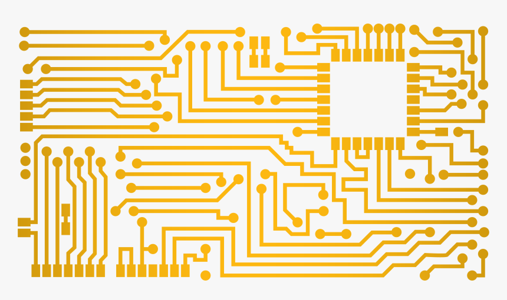

Tantárgy tematikus leírása:
Passzív és elektromos ellenállások fajtái, tulajdonságaik. Kondenzátorok, tekercsek fajtái, tulajdonságaik.
Logaritmikus egységek az elektronikában. Félvezetőelmélet alapjai, pn réteg tulajdonságai. Kétrétegű
félvezetők. Zener‐dióda, speciális diódák. Dióda és Zener‐dióda alkalmazások. Tranzisztorok működése,
tulajdonságai, jellemző paraméterei. Munkapontbeállítás. Tranzisztoros alapkapcsolások, kis‐ és nagyjelű
tulajdonságaik. Speciális tranzisztorok, Darlington kapcsolások. Erősítők csoportosítása. Aszimmetrikus és
szimmetrikus erősítők. Negatív visszacsatolás. Kisjelű aszimmetrikus erősítők diszkrét félvezetőkel.
Differenciálerősítők előadás. Erősítők alsó‐ és felső határfrekvenciái. Teljesítményerősítők és fajtáik,
tulajdonságaik. Műveleti erősítők felépítése, jellemző paraméterei. Lineáris üzemű alkalmazások. Erősítő
alapkapcsolások. Összeadó és kivonó kapcsolások. Integráló, deriváló, PI és PD kapcsolások. Nemlineáris
alkalmazások. Logaritmikus, exponenciális erősítők, precíziós egyenirányítók, komparátorok. TTL
áramkörök belső felépítése, karakterisztikái.
